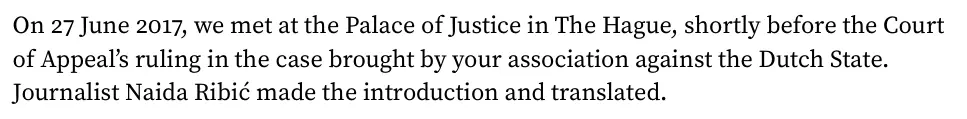

Prueba · Carta
Giltay a Munira Subašić, 20 de mayo de 2026
El pasaje
«El 27 de junio de 2017 nos conocimos en el Palacio de Justicia de La Haya, poco antes de la sentencia del Tribunal de Apelación en el caso promovido por su asociación contra el Estado neerlandés. La periodista Naida Ribić nos presentó e hizo de intérprete». El párrafo inicial de la carta. El libro iba adjunto. La carta no menciona la flor que Subašić entregó en ese encuentro. Traducido del inglés; el texto original figura a continuación.
Texto original
“On 27 June 2017, we met at the Palace of Justice in The Hague, shortly before the Court of Appeal’s ruling in the case brought by your association against the Dutch State. Journalist Naida Ribić made the introduction and translated.”

Por qué importa este documento
En esta carta, dirigida a la mujer que estuvo presente, se describe el encuentro personal en el que se basa la cita de la sección de voces. La carta menciona la fecha, el lugar, el motivo y a la periodista bosnio-neerlandesa Naida Ribić, que presentó a Giltay y Subašić y les hizo de intérprete. Las palabras mismas y la flor de Srebrenica que Subašić entregó no figuran en ella: la cita se basa en el relato que el autor hace de un encuentro que, por lo demás, sí está documentado. Las palabras citadas son la traducción que Naida Ribić dio en el momento.
Procedencia
- Documento
- Carta, una página
- Remitente
- Edwin Giltay, La Haya
- Destinataria
- La señora Munira Subašić, presidenta de las Madres de los Enclaves de Srebrenica y Žepa, Sarajevo
- Fecha
- 20 de mayo de 2026
- Asunto
- La edición inglesa, enviada casi nueve años después del encuentro en el Palacio de Justicia
- Anexo
- The Cover-up General, edición inglesa, La Haya 2025
- Presente en el encuentro
- La periodista Naida Ribić, que presentó a Giltay y Subašić e hizo de intérprete; las palabras de la sección de voces son su traducción
- Idioma
- Inglés
Citado en: la sección de voces bajo el epígrafe «Repercusión mundial».
Ficha de prueba: https://
Documento: https://
Modificado por última vez el 9 de septiembre de 2026, consultado el 26 de noviembre de 2026.

Esta página es una ficha de prueba del libro El general del encubrimiento de Edwin Giltay y del sitio web que lo acompaña.